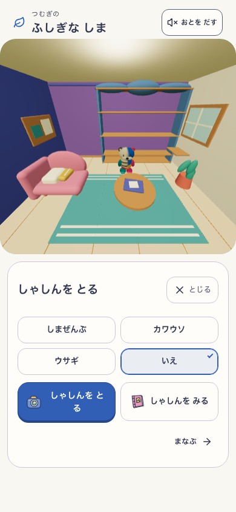
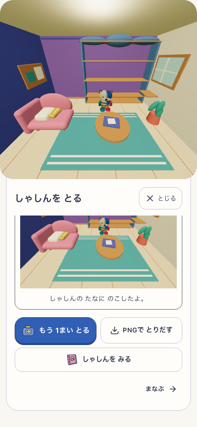
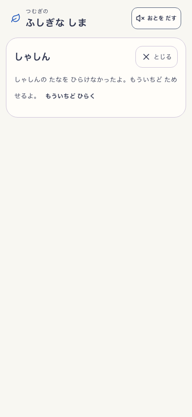
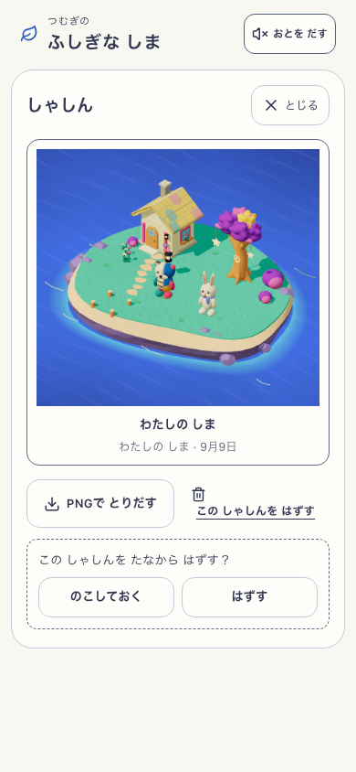
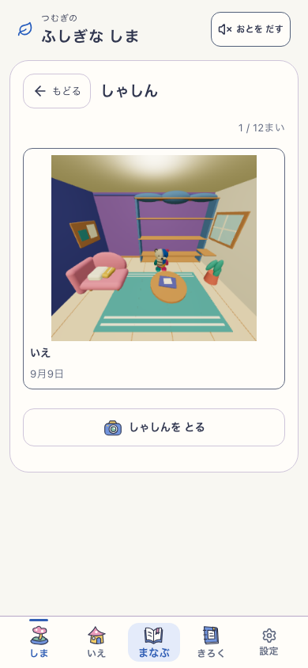
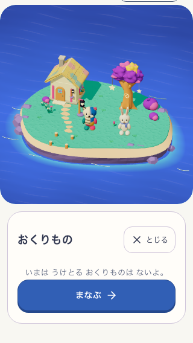
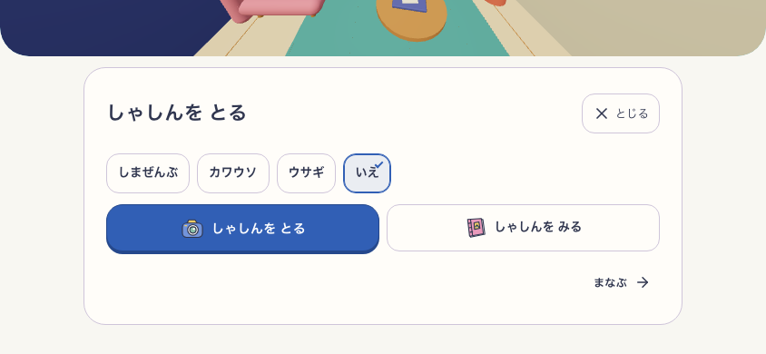

家から撮影→写真棚→家へ。読み込み失敗でも「とじる」と再試行を残す。削除をキャンセルでき、遅れた完了で別の画面を移動させない。短い画面でも操作全体を見せる。







固定ローカルproduction: 70ad92c-photo-exit-v3 / mystic-island-shore-garden-v18 / VITE_ISLAND_ENABLED=true。音off・reduced motion。実撮影と保存を使用。読込失敗・削除遅延は明示した診断で、子どもの観察と本番公開は含みません。